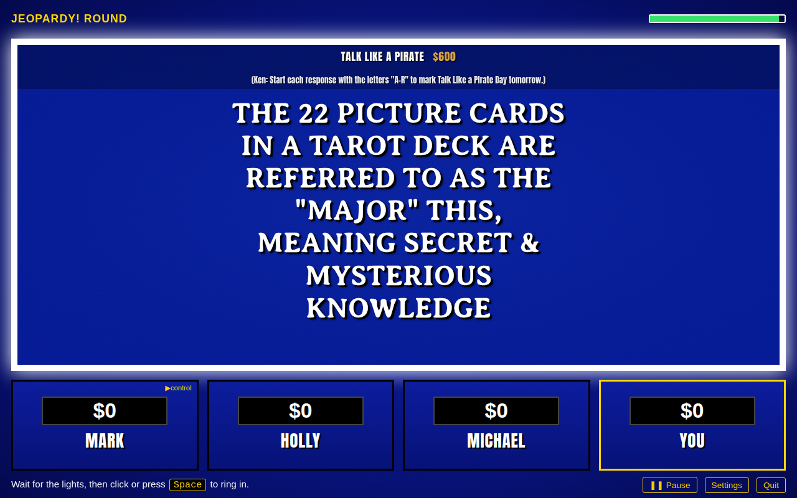

J-Play Live
Turns any game on J! Archive into a live game: the host reads the clues aloud, you ring in and answer by voice, and you race the three original contestants.
Until it's in the Chrome Web Store, installing takes one extra step (about a minute).

Install
- Download the zip.
Use the button above; the file lands in your Downloads folder.
- Unzip it, and keep the folder.
Mac: double-click
j-play-live.zipin your Downloads folder. A folder calledj-play-liveappears next to it.Windows: right-click
j-play-live.zipin Downloads, choose Extract All…, then Extract. You get a folder calledj-play-live.Move that folder somewhere it can stay (Documents is a good spot). Chrome runs the extension straight from the folder, so if you delete it later, the extension stops working.
- Load it in Chrome.
Type
chrome://extensionsinto Chrome's address bar and press Enter. Turn on Developer mode (the switch at the top right), click Load unpacked, and choose thej-play-livefolder.That's it. If Chrome mentions that you have developer‑mode extensions, that's just this one; you can dismiss the message.
- Play.
Open any game on J! Archive, for example this one, and click the ▶ Play Live button that appears above the board. Allow the microphone when Chrome asks. Choose a difficulty, and start.
Tips for the first game
- Ring in with the space bar once the lights come on around the clue (after the host finishes reading; ringing in early locks you out for a moment, just like the show). Then say your response, "What is…", and the host judges it.
- The studio voice and the studio ear. On the setup screen, click Check my computer. If your computer is up to it, download the studio voice (a natural host voice, about 330 MB) and the studio ear (speech recognition that runs on your own computer, about 210 MB, and doesn't care how good the Wi‑Fi is). Both are one-time downloads; nothing is sent anywhere afterward. Without them the game uses Chrome's built-in voice and recognizer, which work too.
- Press Esc to pause. From there you can change settings, fix a call the judge got wrong (Edit results), rewind to an earlier clue, or see the high scores.
- Say the category and amount to pick a clue when you have control of the board ("Potent Potables for 600"), or just click it.
- Play with friends on one keyboard. Under Players in Settings, choose two or three of you, give everyone a name and a ring-in key (one of you can use the mouse), and keep the archive's contestants in or leave them out — up to six podiums. Everyone gets their own saved game and stats.
- Pick up where you left off. Games you've finished get a gold ✓ in the archive's lists, and a small J-Play Live panel in the corner of every archive page offers the next game after the last one you played.
When it reaches the Chrome Web Store
chrome://extensions. Your settings and high scores carry over; they're saved by the site, not by the copy of the extension.
Until then, this copy doesn't update itself: to get a newer version, download the zip again, replace the j-play-live folder, and click the reload arrow on the extension's card in chrome://extensions (or just restart Chrome).
Requirements
Google Chrome on a Mac or a PC (Edge and Brave work too; their extensions page is edge://extensions or brave://extensions). A microphone to answer by voice; you can also type responses. The studio voice and ear are optional downloads and run best on a computer with a graphics processor.